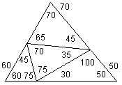
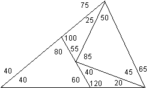
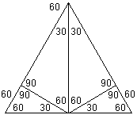
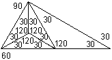

Problem B: Triangle Cuts
| Source file: |
triangle.{c, cpp, java} |
| Input file: |
triangle.in |
| Output file: |
triangle.out |
|  |

|

|
Disallowed Pattern

|
| Figure 1 |
Figure 2 |
Figure 3 |
Figure 4 |
A computer science professor was watching his young daughter use
scissors to cut large triangular pieces of paper that were green on one
side and white on the other. She always kept the white side of
the paper up, so the green side was never visible, and she always
followed the same general procedure. Starting with one large white
triangle, she would always make exactly three straight cuts, each of
which separated one piece of paper into two, and end up with exactly
four smaller white triangles. Then she would put the small
triangles aside and start over with a new large triangle.
The first three figures show some of the possibilities. All angles are
in degrees. In Figures 1 and 2, no cut goes all the way from one
vertex of the original large triangle to the opposite side. In
fact, these two figures (including any rotations thereof) show the only ways that
she could produce four triangles without making such a cut. The
pattern in Figure 4 can't happen, because her cuts always separate the
current piece of paper into two pieces; after she cuts off the
rightmost triangle in Figure 4, none of the remaining cuts will
separate the remaining triangle into two pieces.
The professor imagined a room full of children producing piles of
triangles using different methods, and wondered if he could identify
his daughter's work. Given the exact size and shape of four small
triangles, could he tell if she could have produced them from one large
triangle? After a moment's thought he realized that he could
simplify the problem and consider only the shapes of the triangles,
noting that if the shapes were compatible, there would always be some
appropriate sizes for the small triangles. This led to the
following problem for you to solve: given the angles of a large
triangle and four smaller ones, is it possible that the small triangles
could have been obtained from the large one using the procedure his
daughter was following?
Input: The input contains from 1 to 30 datasets followed
by a line
containing only "0 0 180".
Each dataset contains 15 positive
integers separated by single blanks on one line. Each integer is
less than 180. Each group of
three integers are the vertex angles for one triangle, expressed in
degrees.
Assume that none of the triangles is flipped over so the green side
of the paper is up, and the vertex angles are listed in clockwise order
around each individual
triangle.
The first four datasets of the sample input below correspond to the
figures
above.
Output: The output
contains one line for each data set. If the
child's cutting play, as described above, started with a triangle
with the first three angles, and could have ended up with triangles
matching the last
four triangles in the dataset, then the line contains
"yes". Otherwise the
line contains "no".
|
Example input:
|
Example output:
|
60 70 50 30 100 50 75 70 35 75 60 45 45 65 70
40 75 65 60 40 80 20 120 40 45 85 50 25 55 100
60 60 60 30 60 90 30 60 90 90 60 30 90 60 30
30 60 90 30 120 30 30 120 30 30 120 30 30 120 30
60 70 50 30 100 50 75 70 35 75 60 45 70 65 45
0 0 180
|
yes
yes
yes
no
no
|
Last modified on October 26, 2004 at 8:45 PM.